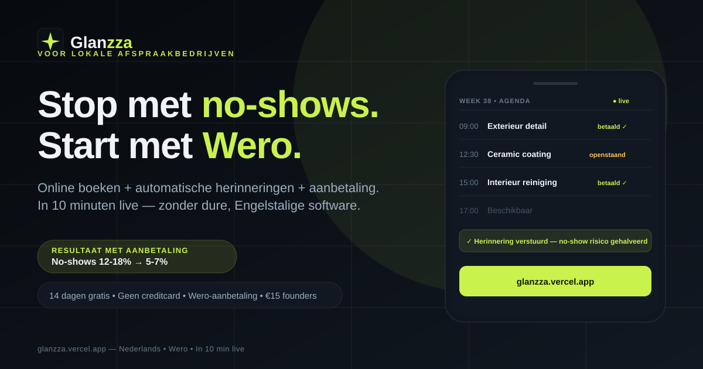

Case — Webapp · 2026
Glanzza
Een boekings- en no-show-tool voor afspraakbedrijven. Elke zaak krijgt een eigen boekingspagina met eigen diensten, prijzen en een aanbetaling via Wero — zodat klanten komen opdagen of de plek netjes vrijgeven.

Het probleem
Afspraakbedrijven — kappers, nagelstudio's, schoonheidssalons — verliezen omzet aan klanten die niet komen opdagen. Bestaande boekingssoftware is vaak duur, Engelstalig of vol functies die je niet gebruikt.
Wat er is gebouwd
- Landingspagina die het probleem en de oplossing in één oogopslag uitlegt
- Onboarding waarin een bedrijf zich zelf aanmeldt en een eigen boekingslink krijgt
- Boekingspagina per bedrijf met eigen diensten, prijzen en beschikbaarheid
- Aanbetaling via Wero, zodat een afspraak iets waard is
- Centrale backend die boekingen wegschrijft en de agenda bijhoudt
- Gegevens strikt gescheiden: elk bedrijf ziet alleen het zijne
Details waar het op aankomt
Formulieren controleren verplichte velden, e-mail, telefoonnummer en of de datum niet in het verleden ligt. Dubbele bedrijfsnamen worden geblokkeerd, bestaande bedrijven kunnen niet overschreven worden en onzin-diensten worden eruit gefilterd. Verder: skip-link, aria-labels, aria-live meldingen, zichtbare focusringen en respect voor prefers-reduced-motion.
Resultaat
Eén tool die een zaak in ongeveer tien minuten live heeft: geen account per medewerker, geen maandelijkse licentiekosten en geen Engelse software waarin je moet zoeken naar de basis.
Iets vergelijkbaars nodig?
Of het nu gaat om boekingen, reserveringen of een klantportaal: ik bouw het zo dat het past bij hoe jouw bedrijf werkt.
Bespreek jouw systeem →